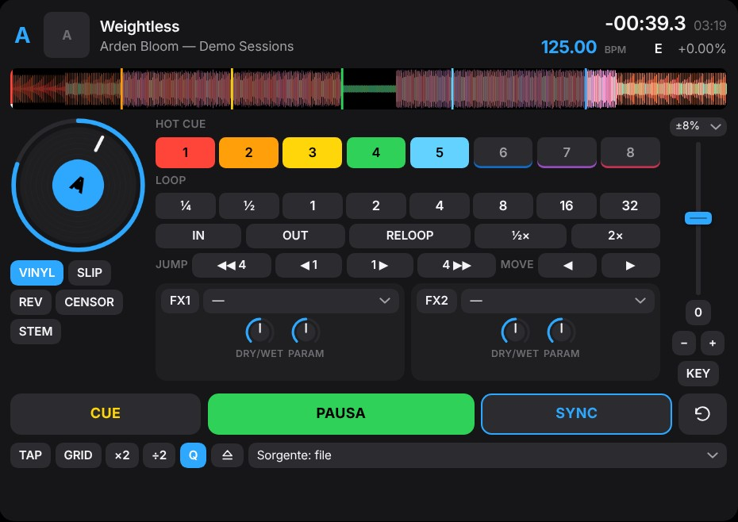
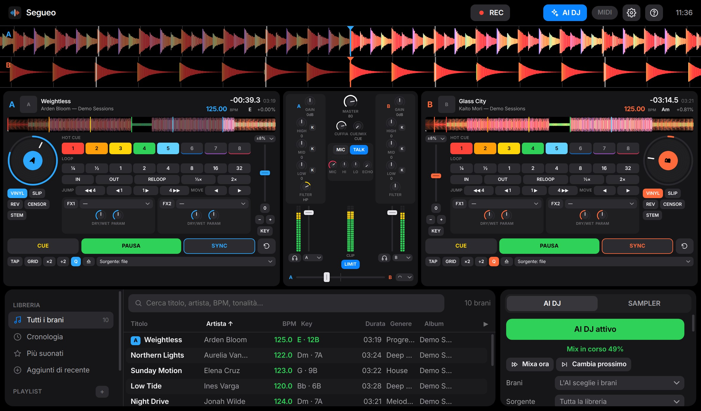
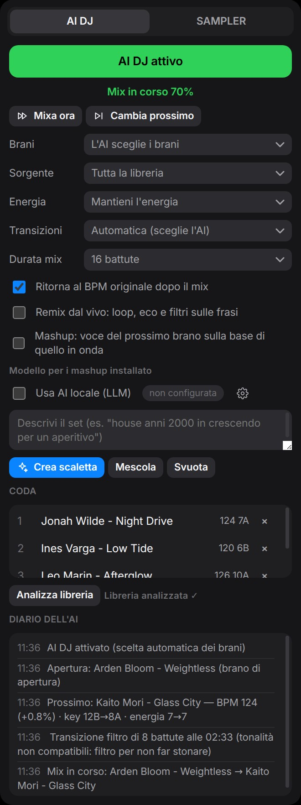
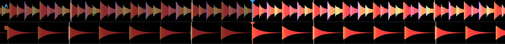
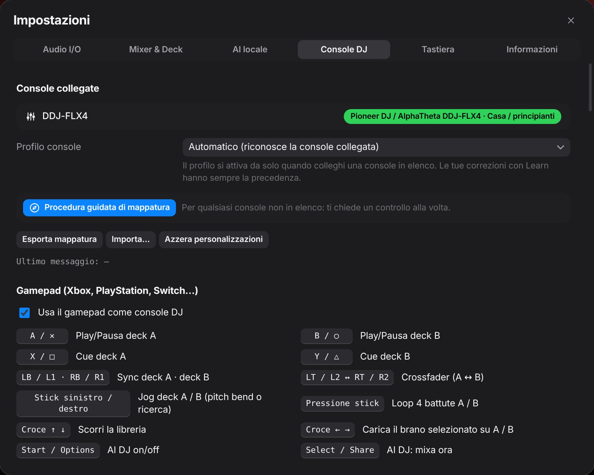
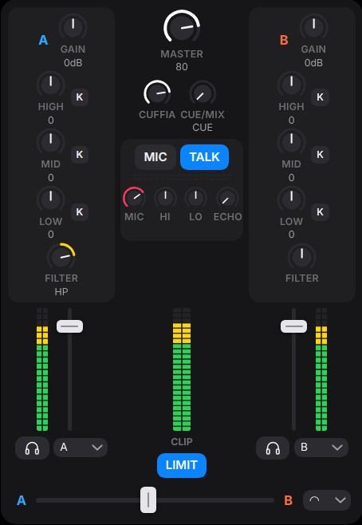
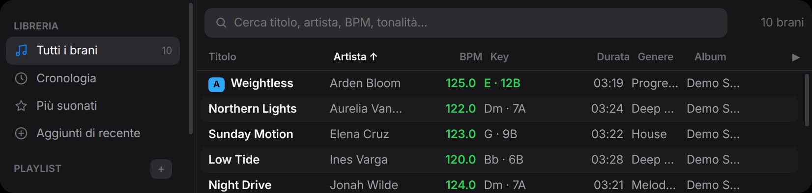
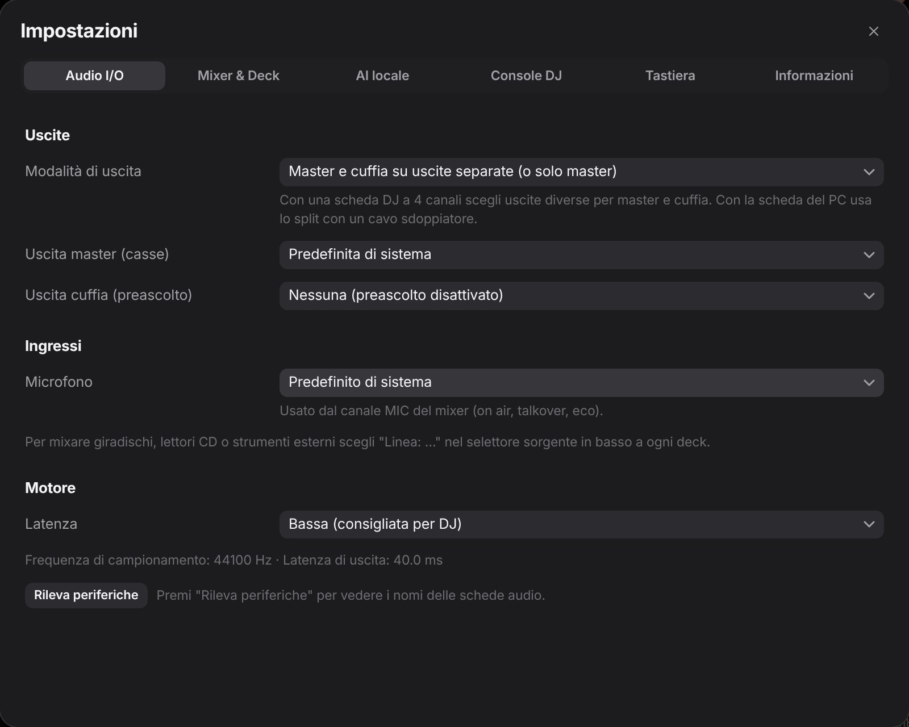
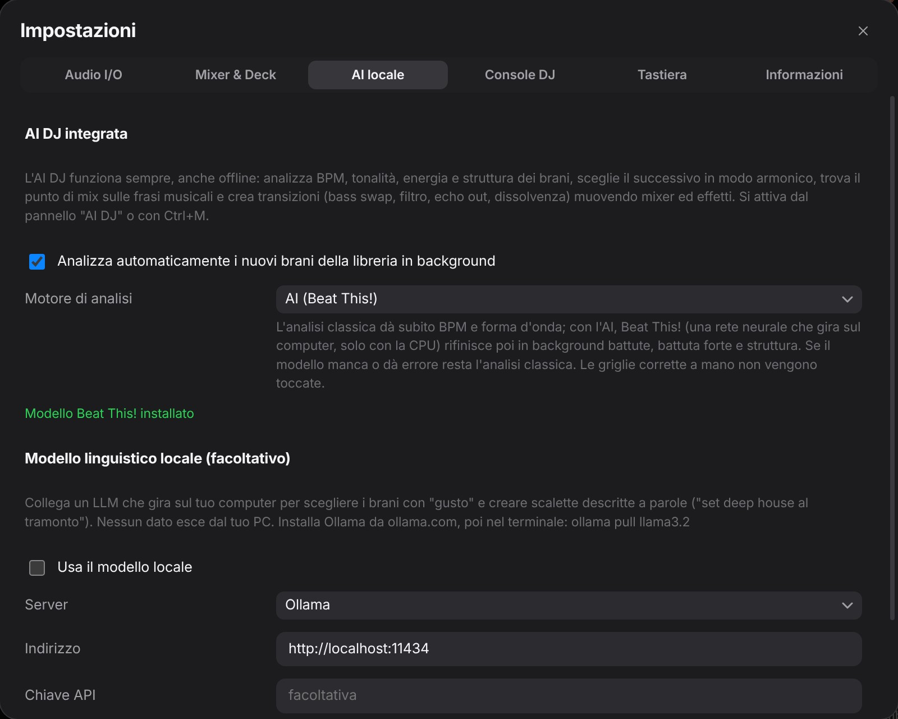

Deck
Scratch sul jog, CUE da CDJ, 8 hot cue salvati per brano, loop da ¼ a 32 battute, keylock, sync di tempo e fase, slip e censor.

Software DJ · Gratis · Windows, macOS, Linux
Due deck, un mixer vero e un'intelligenza artificiale che sceglie, sincronizza e mixa i brani al posto tuo. Oppure insieme a te.

AI DJ
L'AI DJ ascolta tutta la tua libreria, capisce come è fatto ogni brano e costruisce il set come farebbe un DJ: brano giusto, momento giusto, transizione giusta.
Analizza in background BPM, griglia delle battute, tonalità, energia e struttura: intro, frasi da 8 battute, finale.
Trova il brano successivo compatibile per tonalità (ruota Camelot) e tempo, seguendo l'energia che hai deciso per la serata.
Sceglie il punto d'uscita all'inizio di una frase musicale e lo stile: bass swap, filtro, echo out, dissolvenza o taglio sul beat.
Sincronizza tempo e battute, muove crossfader, EQ ed effetti, poi riporta piano il brano al suo tempo originale.

Nel diario dell'AI ogni scelta è spiegata in chiaro. Puoi intervenire quando vuoi: Mixa ora anticipa la transizione, Cambia prossimo scarta il brano preparato.

Segueo contiene già tre modelli AI, tutti dentro l'installer: Beat This! trova i battiti e l'inizio di ogni battuta, il modello delle transizioni, allenato su DJ set veri, decide crossfader ed EQ, e Demucs separa voce e base per i mashup. Girano interamente sul tuo computer, con la sola CPU, senza connessione e senza abbonamenti.
In più puoi collegare un modello linguistico locale (Ollama, LM Studio e compatibili) per scegliere i brani e creare scalette descritte a parole.
Console DJ
Segueo riconosce la console appena la colleghi via USB, carica la mappatura e accende le luci dei pulsanti. Dalla prima console di casa a quella da club.

Pioneer DJ DDJ-200, DDJ-FLX2, DDJ-400, DDJ-FLX4, DDJ-SB3 · Hercules DJControl Starlight, Inpulse 200 e 300, Mix · Numark Party Mix, DJ2GO2 Touch, Mixtrack Pro FX, Mixtrack Platinum FX
Pioneer DJ DDJ-FLX6, DDJ-SR2, DDJ-REV1/5/7, DDJ-800 · Hercules Inpulse 500, Inpulse T7 · Numark NS4FX, Mixstream Pro · Denon DJ MC4000, MC6000MK2 · Behringer CMD, Novation Launch Control
Pioneer DJ DDJ-SX3, DDJ-1000, DDJ-FLX10, XDJ-RX3, XDJ-XZ, Opus Quad · Denon DJ MC7000, SC6000, SC5000, Prime 4 · Rane ONE, Seventy, Four · Allen & Heath Xone:K1, K2, K3
La procedura guidata ti chiede un controllo alla volta: premi, muovi, fatto. Ogni comando si corregge con Learn e le mappature si esportano per condividerle.
Un controller Xbox, PlayStation o Switch diventa una console: play e cue sui tasti, crossfader sui grilletti, jog sugli stick.
Funzioni
Scratch sul jog, CUE da CDJ, 8 hot cue salvati per brano, loop da ¼ a 32 battute, keylock, sync di tempo e fase, slip e censor.

EQ a tre bande con kill, filtro, crossfader con tre curve, limiter e preascolto in cuffia.

Ricerca istantanea, playlist e cronologia. I brani compatibili per BPM e tonalità con quello in onda si illuminano in verde.

Casse e cuffia su schede audio diverse, oppure su una sola scheda in modalità split. Giradischi, lettori CD e microfono entrano direttamente nel mix.

Echo, ping-pong, reverb, flanger, phaser, filtro LFO, bitcrusher, trance gate. Due per deck, a tempo con il BPM.
Otto pad con air horn, sirena, riser e altri suoni inclusi. Trascina un file su un pad per sostituirlo.
Il mix finisce in un file WAV scritto su disco mentre suoni: anche un set di ore.
BPM, griglia delle battute, tonalità, energia e volume medio, per brani sempre allo stesso livello.
On air, talkover che abbassa la musica quando parli, EQ, eco e compressore.
MP3, WAV, FLAC, OGG, Opus, M4A, AAC e AIFF. Trascini, suoni.
Quando esce una nuova versione l'app te lo dice, la scarica, ne verifica l'impronta SHA-256 e si aggiorna al riavvio.
Jog con scratch vero, modalità slip e reverse, pitch fino a ±100% e keylock per tenere ferma la tonalità.
L'interfaccia si adatta da sola: dal MacBook 13" al monitor esterno, senza niente che si sovrappone.
Privacy
Analisi, scelte e mix avvengono in locale. Se colleghi un modello linguistico, anche quello gira sulla tua macchina: nessun brano, titolo o dato lascia il PC.

Gratis e open source. Ultima versione disponibile su GitHub.
macOS: l'app non è ancora firmata da Apple. Al primo avvio fai clic destro sull'app e scegli Apri.
Linux: rendi eseguibile il file con chmod +x e avvialo.